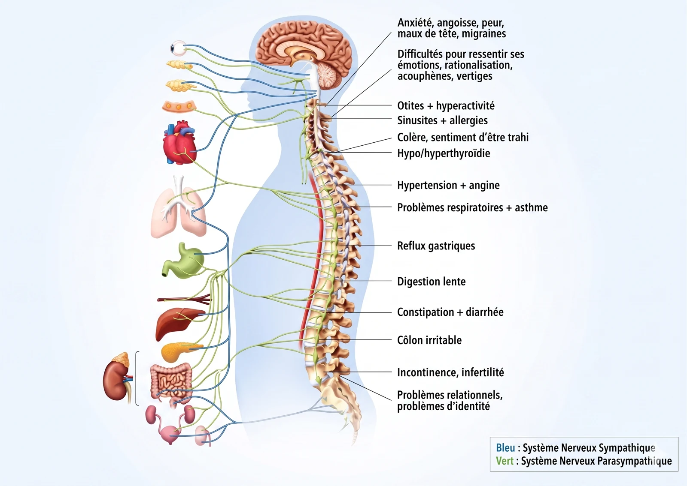
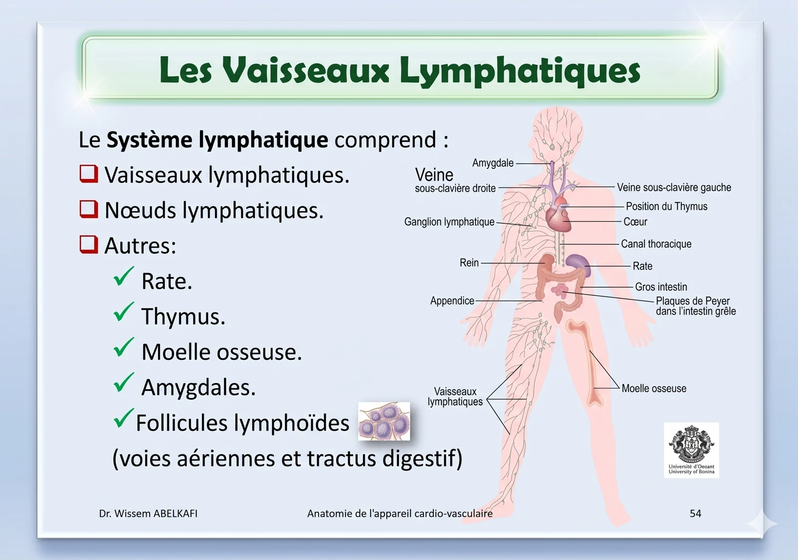
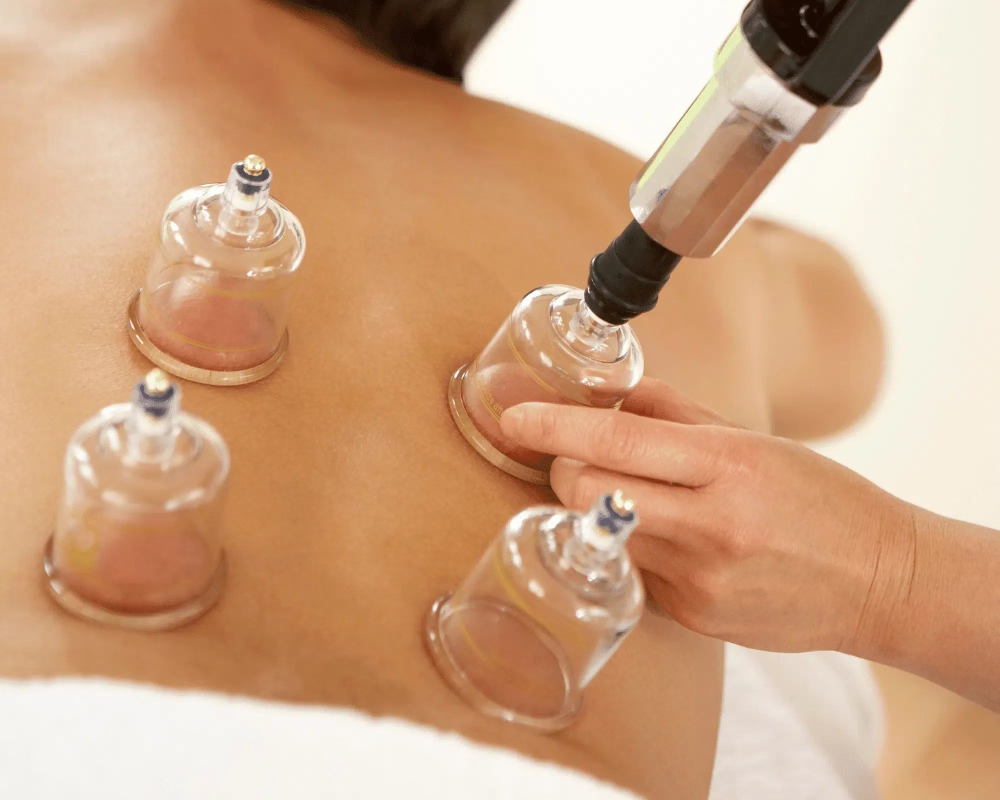
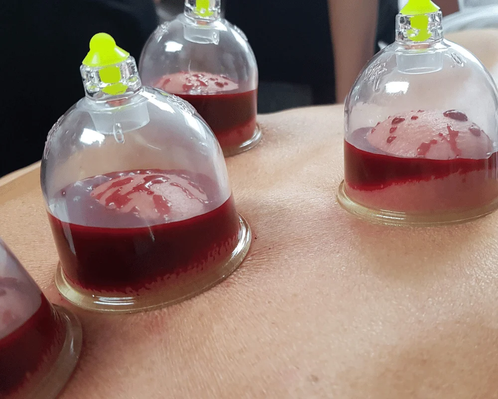

Une cartographie codifiée par 3 000 ans de pratique, articulant médecine prophétique et médecine traditionnelle chinoise. Au cabinet, chaque pose suit un examen clinique préalable — pas de protocole « générique », jamais.
98points anatomiques
55points dorsaux
43tête & abdomen
Principe général
Pourquoi ces points ?
Le corps humain compte 98 points de thérapie en ventouses documentés. Leur localisation suit deux logiques convergentes : les méridiens de la médecine traditionnelle chinoise (12 méridiens principaux, chacun lié à un organe, et 8 méridiens extraordinaires) et la tradition prophétique (Sunna) qui retient un sous-ensemble de points — Akhdaain, Kahil, Al-Akhda'ayn, etc.
Le dos concentre 55 points ; ce n'est pas un hasard. La moelle épinière distribue les nerfs vers tous les organes internes : stimuler la peau et les fascias du dos déclenche une réponse réflexe sur l'organe correspondant. 43 points complémentaires sont localisés sur la tête, la nuque et l'abdomen.
Fig. 01

Méridiens & systèmesCartographie organes / dermatomes utilisée pour cibler les points.Fig. 02

Circulation & vaisseauxRéseau capillaire-lymphatique mobilisé par l'aspiration locale.
Pourquoi autant de points dans le dos ?
Au niveau du dos passe la moelle épinière — le prolongement du cerveau qui distribue les nerfs entre le système nerveux central et chaque organe interne. Stimuler la peau et les fascias paravertébraux déclenche, par voie réflexe, une réponse sur l'organe correspondant : c'est la base anatomique des points de Hijama.
À chaque pathologie correspond une zone réflexe dont la position dépend du terminus des nerfs concernés. Exemple : l'estomac dispose de 2 points, le pancréas de 2 points, le côlon de 6 points… La cartographie ci-dessus guide le choix des points pendant la séance, en fonction de votre indication clinique.
Hijama et système lymphatique
La Hijama agit également sur le système lymphatique, fondement de l'immunité. Le réseau lymphatique transporte les cellules immunitaires, les hormones et les nutriments — et draine l'excès de liquide tissulaire.
L'aspiration des ventouses mobilise localement le réseau capillaire-lymphatique, soutient la réponse immunitaire et aide le corps à résister aux pathologies infectieuses récurrentes. C'est l'un des mécanismes documentés de la thérapie par ventouses contre l'inflammation chronique de bas grade.
01
Points du dos & rachis
55 points · zone principale
Kahil (C7) — base de la nuque, point central de toutes les médecines traditionnelles. Indications nombreuses.
Akhdaain — points latéraux haut du dos, partie supérieure des trapèzes.
Points paravertébraux — de chaque côté de la colonne, à hauteur des dermatomes correspondant aux organes.
Points lombo-sacrés — bas du dos, zone reins, hanches, petit bassin.
Points scapulaires — autour des omoplates, douleurs cervicales et tensions musculaires.
02
Tête & nuque
~18 points · zone neurologique
Yafookh — sommet du crâne, indication céphalées et migraines anciennes.
Points cervicaux hauts (C1–C3) — base occipitale, migraines et tensions cervicales.
Points temporaux — tempes, migraines avec aura et céphalées vasculaires.
Points frontaux — sinusites chroniques et congestion frontale.
Points hépatiques — hypocondre droit, soutien foie et vésicule.
Points coliques — 6 points pour le côlon, troubles digestifs.
04
Membres
~18 points · zone fonctionnelle
Points du genou — arthrose, gonalgies, récupération sportive.
Points de la cheville — entorses, œdèmes, troubles veineux.
Points du coude & épaule — épicondylites, capsulites, tendinites.
Points fascia plantaire — talagies et fasciite plantaire.
Le point Kahil (C7)
Le point central.
Situé à la base de la nuque, sous la 7e vertèbre cervicale (C7), le point Kahil est cité dans la tradition prophétique parmi les points les plus recommandés : « Il y a un remède dans trois choses : la Hijama, l'incision et la cautérisation par le feu… » (Sahih al-Boukhari).
Son importance est confirmée par la médecine traditionnelle chinoise, qui le situe au croisement de plusieurs méridiens majeurs. Il est utilisé pour céphalées, hypertension, troubles ORL, fatigue chronique, douleurs cervicales hautes — ses indications sont larges, ce qui en fait souvent un point de départ pour les protocoles.
Types
Au-delà des points, la Hijama recouvre plusieurs types distincts — chacun avec son geste, sa durée, ses cas d'usage. Ils ne sont pas interchangeables : le choix se fait au bilan préalable.
Les types de Hijama
A
Hijama sèche (sans incision)
Aspiration sans saignée. Trois variantes selon l'effet recherché : statique, glissante, ou flash.

Geste · AAspiration mécanique au pistoletPose à sec, sans incision. Pression contrôlée, sans douleur.
A.01
Ventouses fixes
Pose statique d'environ 10 minutes sur les points anatomiques. La qualité de l'aspiration importe plus que la durée. Stimulation du flux sanguin par effet circulatoire — les substances métaboliques sont remontées vers la surface cutanée.
Aspiration légère, déplacement de la ventouse en « S » sur la peau préalablement huilée. Repère et libère les points douloureux musculaires, idéale sur le dos, les trapèzes et les paravertébraux.
Pose et retrait toutes les 3 secondes, en série rapide. Stimule la circulation entre derme et surface sans laisser de marques durables. Convient aux profils sensibles et aux séances douces.
Geste rapide, peu de marquage
Effet circulatoire de surface
Indication : enfants > 10 ans, profils anémiques
B
Hijama humide (scarification superficielle)
La technique la plus citée dans la tradition prophétique. Elle débute toujours par une pose à sec, puis introduit une scarification superficielle de 2 à 3/10 mm — pour drainer l'excès via le réseau capillaire-lymphatique.

Geste · BScarification & drainageLancette stérile à usage unique, profondeur 2–3/10 mm.
01
Pose à sec
Ventouses statiques 5 à 10 min pour faire affleurer le territoire à drainer.
02
Scarification
Lancette stérile à usage unique, profondeur 2–3/10 mm — superficielle, indolore pour la grande majorité.
03
Aspiration drainante
Repose des ventouses pour évacuer la stase capillaire. Volumes prélevés faibles, contrôlés.
04
Asepsie & pansement
Désinfection cutanée, pansement protecteur, déchets piquants en conteneur DASRI conforme.
À ne pas confondre
La Hijama humide n'est pas une « saignée ». Elle ne vise pas à retirer un volume sanguin, mais à drainer la stase capillaire-lymphatique localisée par les points choisis. Volumes prélevés faibles, mesurés, sans impact sur la volémie.
C
Ventouses combinées (approches complémentaires)
Variations issues de la médecine traditionnelle chinoise et du Tibb Nabawi, utilisées en complément des techniques classiques selon le profil et l'indication.
NeedleVentouses sur aiguilles d'acupuncture pour cibler un méridien précis.
MoxaCombustion lente d'armoise (moxibustion) sous ventouse — effet thermique profond.
HerbalPlantes médicinales (nigelle, thym) en application locale avant la pose.
WaterVariante hydratante par infusion d'eau tiède, indiquée sur peaux fragiles.
D
Fréquence indicative
Le rythme dépend de l'indication, du profil, et de la réponse aux premières séances. Repères généraux observés au cabinet.
ÉvaluationEffet attendu après 3 séances avant ajustement.
AiguPremiers résultats observables sous 3 à 4 jours.
ChroniqueBilan d'efficacité à 15 à 21 jours.
ThyroïdeEspacement long : 1,5 à 2 mois entre séances.
Patients âgésEspacement long pour faciliter la récupération.
AutresCadence courante de 10 à 15 jours entre séances.
Les marques cutanées rouges ou violacées s'estompent en quelques jours. Elles signent le travail circulatoire local et sont attendues.
— Au cabinet
Pas de protocole « générique »
La cartographie des points n'est pas un menu à la carte. Avant chaque pose, un examen clinique structuré valide les indications, identifie les contre-indications et choisit les points spécifiques à votre histoire médicale et à votre traitement en cours. Deux personnes avec la même plainte peuvent recevoir deux cartes de points différentes.